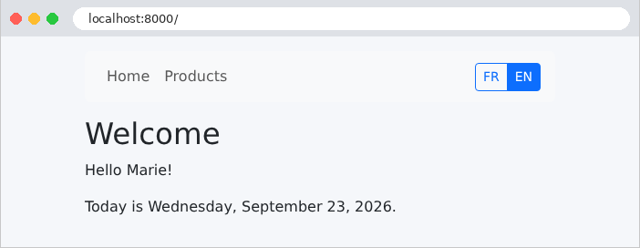
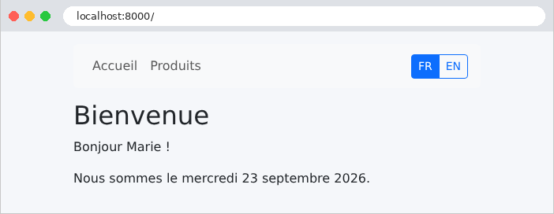
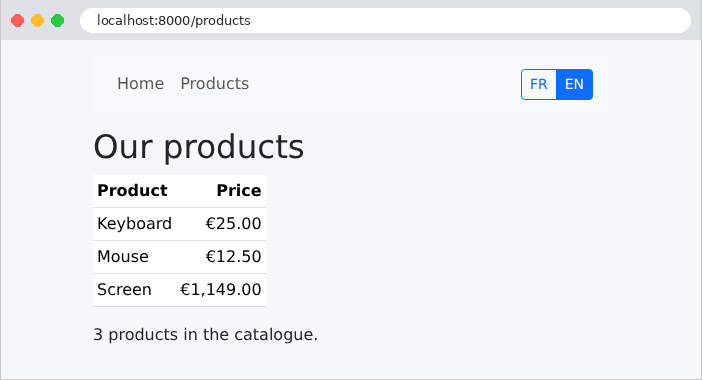
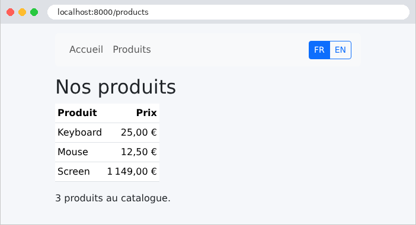

5. Internationalization
An internationalized application displays its text in the user’s language. The case study is in French and English. The principle is simple: the views no longer contain text, but keys ([MENU.HOME]), and a dictionary for each language associates a text with each key. The selected language is stored in a cookie.
[Symfony] includes a translation component, the Translator, which we already encountered in Example 09 for validation messages. Its dictionaries are stored in the [translations] folder, with one file per domain and per language: [validators.en.yaml] (the validation messages domain, Example 09), [messages.en.yaml] (the default domain, the one for our texts). The YAML format allows for nested keys: this is how the dictionaries for versions [ASP.NET Core MVC], [NestJS], [Spring MVC], [Flask], and [Laravel] from the case study, with the exception of syntax. For the syntax of the messages themselves, we choose the ICU format (International Components for Unicode), a standard that the [intl] extension of [PHP] can interpret, and which, for example, can inflect text into the plural form. The formatting of dates and amounts remains the same as in Example 16.
5.1. Example 22: A Bilingual Application
5.1.1. The configuration: config/packages/framework.yaml
- Line 5: the application’s default language, which is used for requests that do not specify a language (Example 09);
- line 6: the languages supported by the application. This list is used by [Symfony] (the profiler, localized route generation, etc.); our own code also has its own list, in the listener [SetLanguage];
- lines 9–11: the translation service. [fallbacks] specifies the fallback language(s): if a key is missing from the requested language’s dictionary, it is looked up in the English dictionary. A key missing from all dictionaries is displayed as-is: this way, any omission is immediately visible on the screen.
5.1.2. The Dictionaries
The file [translations/messages+intl-icu.fr.yaml]:
The file name consists of three parts: the domain ([messages], the default domain), the suffix [+intl-icu], which indicates messages in the ICU format, and the language ([fr]). Keys are grouped by topic using the YAML nesting structure: the menu item “Accueil” has the key [MENU.HOME], with levels separated by a period. A text may contain parameters, written as [{name}], which are replaced during translation.
- Line 9: Apostrophes delimit a string YAML; they are necessary when the text contains characters that YAML interprets (curly braces, colons, etc.);
- Line 15: a plural message. [{n, plural, ...}] selects a form based on the value of the parameter [n]: [=0] for exactly 0, [one] for the singular, [other] for the plural; [#] is replaced by the number. Plural rules depend on the language, and ICU knows them: in French, 0 and 1 are singular, whereas in English, 0 is plural (“0 products”). This is an improvement over the “product(s)” used in previous versions of the case study.
The file [translations/messages+intl-icu.en.yaml] has exactly the same keys:
Without the suffix [+intl-icu], the parameters would be written as [%name%], and the plural would use a syntax specific to [Symfony] ([{0} Aucun produit|{1} Un produit|]1, Inf[ %n% produits]). The format ICU is the one currently recommended by the [Symfony] documentation.
5.1.3. The language of each query: src/EventListener/SetLanguage.php
This is the [SetLanguage] listener from Example 16, which this time retrieves the language from a cookie:
- line 11: the [kernel.request] event listener, with priority 20: after routing, but before the [Symfony] listeners that use the request language (Example 16);
- lines 15–17: the supported languages and the cookie name: public class constants, accessible from other classes ([SetLanguage::LANGUAGES]);
- lines 22–24: the request language: the language of the [language] cookie if one exists and is supported; otherwise, English. [$request->cookies] is the set of cookies sent by the browser (example 05); [get] returns the value of a cookie, or [null]. [in_array], with [true] as the third parameter, also compares the types ([===]). [setLocale] sets the request language: this is the language used by the translator, our formatting filters, and the [format_currency] filter of [Twig].
Unlike [Laravel], [Symfony] does not encrypt cookies: the [language] cookie is transmitted in plain text. This is not a problem: it contains no confidential information, and the server accepts only supported languages. The following example revisits the issue of how much trust can be placed in a cookie.
5.1.4. Language selection: src/Controller/LanguageController.php
- line 17: the route [/language/{code}]. The option [requirements] (example 02) limits the parameter to the two supported languages: [/language/de] does not correspond to any route and returns a 404 error;
- line 20: the action responds with a redirect to the page the user came from: the user is taken back to their page in the new language;
- Lines 23–26: The response contains a cookie, which the browser will send back with every request. The [Cookie] class of [Symfony] describes it: [Cookie::create(name, value)] creates it, and each method of [with...] returns a modified copy (an immutable object; see Example 03): [withExpires], the expiration date (in one year); [withHttpOnly(true)] makes it invisible to the [JavaScript] on the page; [withSameSite(Cookie::SAMESITE_LAX)] prevents the browser from sending it with a POST request from another site. ([httpOnly] and [lax] are, incidentally, the default values for [Cookie::create].) [$response->headers->setCookie] adds it to the response as a [Set-Cookie] header;
- lines 33–44: the original page is specified by the [Referer] header in the request (the misspelled version, with a single [r], is the one used in the HTTP standard), which the browser populates with the URL from the page that contained the link. But this header comes from the client, which can put anything in it. Blindly redirecting to this address would turn our application into an open redirect: a malicious link bearing our domain name could send the user to a malicious site. Therefore, we retain only the path and parameters from URL (the [parse_url] function from [PHP] breaks it down into its components in an associative array), and we reject any path that begins with [//], which the browser would interpret as the address of another site.
5.1.5. Actions: src/Controller/PagesController.php
The actions are language-agnostic: they provide raw data (a name, a date, amounts in cents). Translation and formatting are handled by the views. The class [Product] has a name and a price in cents; the extension [FormatsExtension] is the one from Example 16: its filter [long_date] writes a date in the “full” format of the query language (“Wednesday, September 23, 2026,” “mercredi 23 septembre 2026”), and its filter [money] writes an amount.
5.1.6. Translate in the views
- line 3: the page’s [lang] attribute indicates its language to browsers, search engines, and screen readers; [app.request.locale] is the query language;
- line 8: the page title is provided by the page itself, already translated (block [title]).
- lines 4–5: the filter [trans] translates a key into the language of the request;
- lines 9–12: one button per language, which triggers the action [/language/{code}]. The current language is highlighted ([btn-primary], solid button).
- line 2: the translated [title] block for the template;
- line 7: the parameters for a text are provided in an associative array, a parameter of the [trans] filter; [{name}] is replaced by the value of the key [name];
- line 9: the date, formatted in the query language by the [long_date] filter, then passed as a parameter.
- line 13: the filter [money], whose result depends on the language;
- line 19: the [n] parameter for the plural form of the message: the number of products ([length], example 14). The product names themselves are not translated: they are data that, in a real application, would come from a database.
Outside of views, the translator is a service of type [TranslatorInterface], which an action or service can receive via injection: [$translator->trans('HOME.HELLO', ['name' => 'Marie'])].
5.1.7. Execution
The home page, in English (the default language), then in French after clicking the "FR" button:


The products page, in both languages. The amounts follow the conventions of each language:


The language switch, as seen with [curl]. The option [-H] provides the header [Referer] that the browser would send:
The redirect takes you back to the original page ([Symfony] writes a relative URL, which the browser completes), and the cookie is set for one year. A [Referer] that points to another site does not redirect you there: only its path is retained.
The page [/trap] does not exist on our site: the user will receive a 404 error, but will remain on our site. Finally, the home page, requested with the cookie [language=en] (option [-b] of [curl]):
Another way to choose the language would have been to read the browser’s [Accept-Language] header (example 12; [$request->getPreferredLanguage(['fr', 'en'])] selects the best language from among those supported). The two are often combined: the browser’s language on the first visit, followed by the language the user has selected. A third method, commonly used with [Symfony], places the language in the URL ([/en/products]): a special route parameter, [{_locale}], then sets the request language itself. This case study focuses on the cookie, with English as the default.